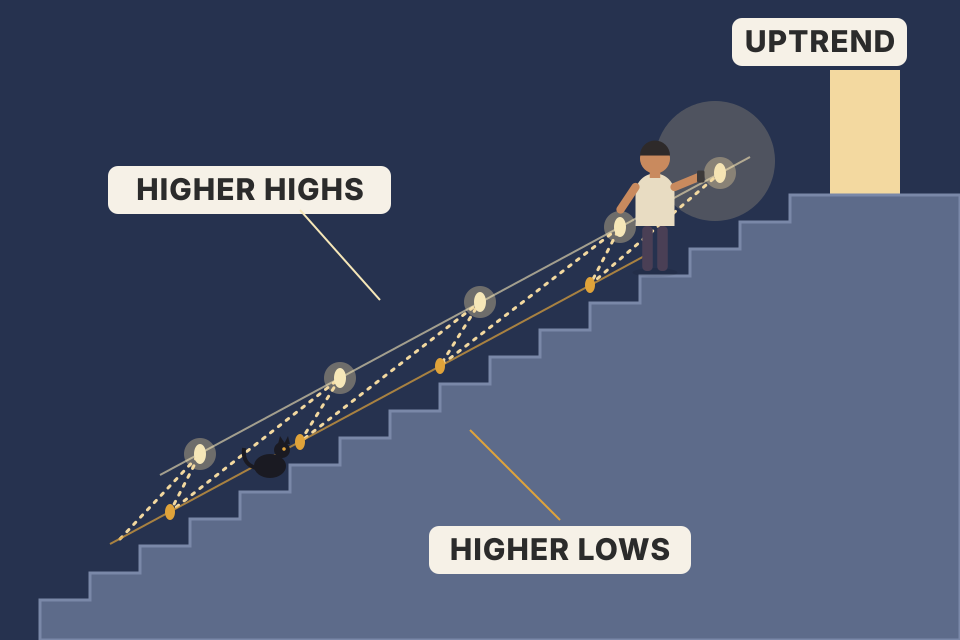
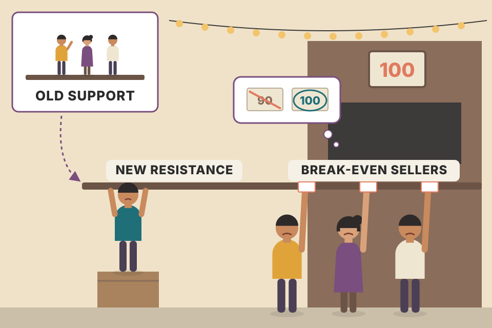
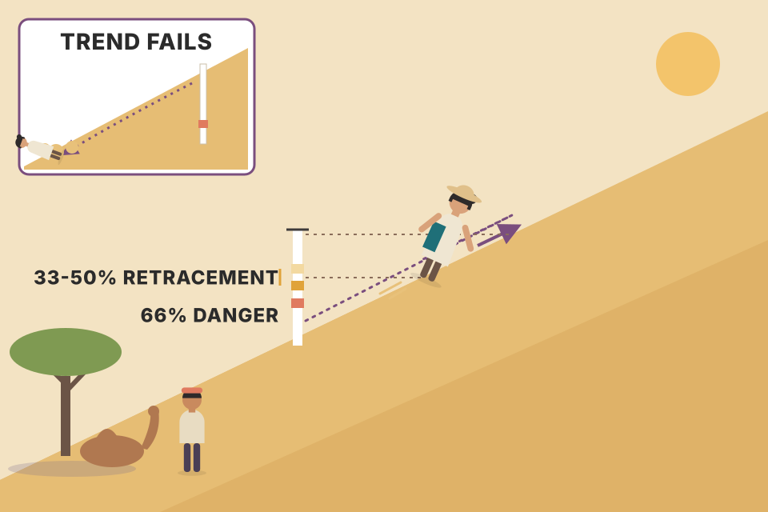
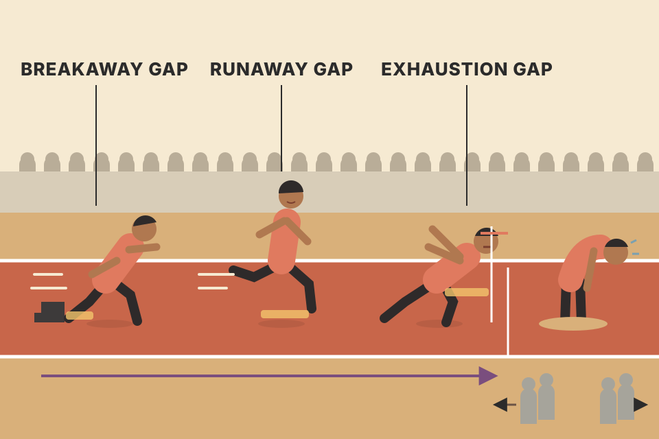

This is the chapter every later chapter stands on. It starts with one idea (a trend is the direction of the market's zigzag peaks and troughs) and builds every tool from it: support and resistance, trendlines, channels, retracements, speedlines, fans, reversal days and gaps. Everything is here in the book's order, in plain words, with a chart for most ideas. All prices on this page are simulated, built to show one idea clearly. Roll a new market and check which ideas still hold.
Murphy builds one idea on top of the last. Each box is a step; each step is one or more plates below.
Murphy calls the concept of trend absolutely essential to the technical approach. Support and resistance, price patterns, moving averages and trendlines all exist for one purpose: to measure the trend so you can trade with it. Hence the old sayings about trading in the direction of the trend, never fighting it, and the trend is your friend.
Loosely, trend is just which way the market is going. To be precise, notice that markets never move in a straight line. They move in zigzags, a series of waves with clear peaks and troughs. The direction of those peaks and troughs is the trend:
Fig 4.1d is a real chart (Dow 20 Bonds) that shows all three in turn: a downtrend, then sideways trading from April 1996 to April 1997, then an uptrend from summer 1997.

A person climbing a staircase in the dark. You can't see each step, but if every place they stop to rest is higher than the last, and every time they slip back they slip back to a higher step than before, they are going up.
Labels: HP / LP = higher / lower peak, HT / LT = higher / lower trough, and "≈" = within 1.5% of the previous one (the 1.5% "level" tolerance is this page's own choice, not Murphy's).
Each new swing is compared with the previous swing of the same kind: peak with peak, trough with trough. A single down day inside an uptrend changes nothing. The trend only changes when the pattern of peaks and troughs changes. Select "down → sideways → up": the labels flip from LP/LT, to ≈, to HP/HT.
Peaks 120 → 126 → 131 and troughs 110 → 114 → 119. Every peak beats the last peak and every trough beats the last trough: an uptrend. The next rally tops at 129. That's a lower peak (129 < 131), but the troughs are still rising, so it's only a warning. The next dip falls to 116, below the last trough at 119. Now both the latest peak and the latest trough are lower. By the definition the uptrend is over. Plate 04 walks through Murphy's reading of this same sequence (Fig 4.4a).
Murphy reads peaks and troughs by eye, after the fact. Code has to decide in real time, and a peak only exists once price has fallen far enough from it. The usual method is a zigzag: a high counts as a peak only after price drops a set percentage z below it, and a low counts as a trough only after price rises z above it. That has a built-in cost. By the time you know a peak happened, price is already at least z away from it, and some days have passed. The chart below runs this exact function on the page's market (the one the Roll button changes).
// c = closing prices, z = 0.05 means a 5% reversal confirms a swing
function zigzag(c, z) {
const piv = []; let dir = 0, hi = 0, lo = 0; // running high / low index
for (let i = 1; i < c.length; i++) {
if (c[i] > c[hi]) hi = i;
if (c[i] < c[lo]) lo = i;
if (dir >= 0 && c[i] <= c[hi] * (1 - z)) { // fell z below the high
piv.push({ i: hi, v: c[hi], type: 'peak', seenAt: i });
dir = -1; lo = i; // now hunt for a trough
} else if (dir <= 0 && c[i] >= c[lo] * (1 + z)) {
piv.push({ i: lo, v: c[lo], type: 'trough', seenAt: i });
dir = 1; hi = i; // now hunt for a peak
}
}
return piv; // then compare each peak with the previous peak, trough with trough
}
Drag the slider. A small z finds many swings quickly, but many of them are noise. A large z finds only the big swings, and confirms each one later and further from its price. This is the same trade-off as Murphy's filters in plates 06 and 10, and as his three degrees of trend in plate 03: the size of swing you choose to count decides which trend you are looking at.
tori_trendlines_explained.md) starts the same way: on the higher timeframes, higher highs + higher lows = uptrend, lower highs + lower lows = downtrend, and that sets the bias.Most people think a market is always going either up or down. In fact it has three directions: up, down and sideways. Murphy's conservative estimate: at least a third of the time prices move in a flat, horizontal band called a trading range. In a range, supply and demand are roughly in balance. Dow Theory calls this a line. It is technically a sideways trend, but people usually call it trendless.
Why it matters: most technical tools and systems follow trends. They are built for markets that move up or down, and they usually work very poorly, or not at all, in sideways phases. That is when chart traders feel the most frustration and system traders take their biggest losses. Murphy's point: the system isn't failing. The trader is failing, by using a trend tool in a market that has no trend.
A trader has three choices: buy (go long), sell (go short), or do nothing (stand aside). Rising market → buying is better. Falling market → selling. Sideways market → staying out is usually the wisest choice.
Simulation, not in the book: a simple trend follower (long when the 10-day average is above the 30-day, short when below, 0.2% cost per trade) on a market that goes up, then sideways (shaded), then down. The bottom panel is its running profit in %.
The chart above is one roll of the dice. The table runs the same system on 300 markets from the same generator (fixed seeds 1001–1300, so the Roll button can't change it). Profit is booked to the day it was earned: a day inside the shaded sideways stretch counts as a sideways day.
Pooled over 300 markets from this page's generator, whose up, sideways and down stretches are planted by construction. It shows the mechanism Murphy describes. It is not evidence about real markets, and Murphy gives no figure of this kind.
A sailing boat. With wind from behind (a trend), it flies. In a calm (a range), the sailor keeps turning the boat to catch gusts that die at once, and gets nowhere. The best move in a calm is to drop anchor.
In a range, price keeps crossing back and forth, so the trend follower tends to buy near the top of the band and sell near the bottom, paying costs each time. Roll a few markets: the sideways stretch is usually where the trades go wrong (not always; it's random). Tick the box to stand aside there. The catch (and why this is only an illustration) is that the page knows where the range is. In real time you have to recognise it, which is what the rest of this chapter's tools are for.
backtest_results_summary.md.Trend also comes in three sizes, the same three categories as Dow Theory (Chapter 2): major, intermediate and near term. In reality there are almost endless trends at once, from minutes and hours up to trends lasting 50 or 100 years, but most technicians use three, and they don't all define them the same way.
| Trend | Dow Theory | Murphy, for futures |
|---|---|---|
| Major | longer than a year | anything over six months (futures traders work on a shorter time scale than stock investors) |
| Intermediate (secondary) | three weeks to as many months | about right for futures too |
| Near term | usually defined as anything less than two or three weeks (Murphy gives this as the common definition, without attributing it to Dow) | |
Each trend is a piece of the next larger one. An intermediate trend is a correction inside the major trend: in a long uptrend the market pauses for a couple of months to correct, and that correction is itself made of near-term dips and rallies. In Fig 4.2a the major trend is up (points 1, 2, 3, 4); the dip 2–3 is an intermediate correction, made of three small waves A, B, C. At point C, the major trend is up but the intermediate and near-term trends are down. At point 4, all three are up. Fig 4.2b (Dow Industrials, 1997) shows it on a real chart: major trend up, a short correction in March, and an intermediate correction from August to November (three months) that broke into three short-term moves.
Simulation: price = a steady major uptrend + a slow wave (the intermediate swings) + a fast wave (near-term swings) + noise. The faint lines show the major trend alone and the major + intermediate parts.
A ship sailing north (major trend). Big ocean swells lift and drop it every few minutes (intermediate). On top of the swells, small ripples rock it every few seconds (near term). "Which way is the ship moving?" has three honest answers.
Each degree's direction is the slope of the price with only that much detail kept. Drag the cursor into a dip and you'll find spots that look like point C (major up, the other two down). That's why Murphy says you can't answer "what's the trend?" until you know which trend the person means. To a long-term position trader, a few days or weeks may not matter; to a day trader, a two- or three-day rise can be a major uptrend.
How traders use the three: most trend-following approaches focus on the intermediate trend, which can last several months. The near-term trend is used mainly for timing: in an intermediate uptrend, short-term dips are used to buy.
In trading days (about 21 a month), Dow's intermediate trend of three weeks to three months is roughly 15–63 days. Murphy's major trend for futures, over six months, is more than about 125 days. The near term, under two or three weeks, is under about 10–15 days. The simulated chart above was built to fit: its slow wave repeats every 85 days, so each intermediate swing lasts about 42 days, and its fast wave repeats every 17 days, so each near-term swing lasts about 8 days. Murphy's real example matches too: the Dow's August–November 1997 correction (Fig 4.2b) lasted three months, the top of the intermediate range.
Many traders give each degree its own chart: a weekly chart for the major trend, a daily chart for the intermediate, and an hourly (or 15-minute) chart for the near term. The rule from this plate then reads: trade in the direction of the intermediate trend, only when the major trend agrees, and use a near-term dip against it to time the entry. Point C in Fig 4.2a is the textbook buy spot only if the major trend is still up when the near-term dip ends.
backtest_results_summary.md) is this rule exactly: weekly uptrend (close > 50-week > 200-week average) for the bigger trend, a dip to the 20-week EMA for timing. It made 18.5–26%/yr with all 8 settings profitable out-of-sample.Now the peaks and troughs get names. Support is a level or area under the market where buying is strong enough to overcome selling, so a decline stops and turns back up. It is usually marked in advance by a previous reaction low. Resistance is the opposite: a level over the market where selling overcomes buying and a rise is turned back, usually marked by a previous peak.
A classic reversal (Fig 4.4a): at point 5 prices fail to beat the previous peak at 3, then fall through the previous low at 4. You could have spotted it just by watching support and resistance. In Chapter 5 it gets a name: the double top. At a bottom (Fig 4.4b) the first sign is usually prices holding above the previous low (5 above 3), and the bottom is confirmed when the peak at 4 is beaten. Fig 4.4c (Pacific High Tech Index): in January 1998 prices retested the December low, bounced to form a second support, and the break above the middle resistance peak signalled a new uptrend.
Every trough marks a price where buyers took over from sellers. Every peak marks a price where sellers took over. When the market comes back near an old trough, it asks the same question again: will buyers step in here? A higher trough means buyers stepped in sooner than last time, so they're getting keener. A peak that can't beat the last one means sellers are now stepping in sooner. That is why the failed peak comes first as a warning, and why the broken trough confirms: the warning says sellers are keener, the break says buyers have given up. Use the step button: the readout compares each new peak with the last peak and each new trough with the last trough, which is all that "reading support and resistance" means here.
An uptrend makes troughs at 100 and 108 and peaks at 115 and 124. The next rally stalls at 121, below the 124 peak: the first warning. Then prices close at 106, below the 108 trough: support is broken, and a reversal from up to down is likely. That is Fig 4.4a's sequence (in Chapter 5 the version with two similar peaks is called a double top).
Failure mode (the page's note, not Murphy's): acting on the warning alone. If the dip after 121 holds at, say, 111 (above 108) and prices then clear 124, the uptrend is intact and anyone who sold at the warning sold early. Murphy's reversal needs both steps: the failed peak, then the broken trough.
A ball bouncing up a staircase. Each floor it lands on is support; each ceiling it touches is resistance. Watch for the bounce that can't reach the last ceiling, and then the landing that misses the last floor.
So far support has been a previous low and resistance a previous high. That's not always so. One of the more interesting and less known facts: when support or resistance is broken by a significant amount, it swaps roles. Broken resistance becomes support; broken support becomes resistance. To see why, Murphy splits traders into three groups and imagines a market that has traded sideways in a support area for a while, then starts rising:
| Group | How they feel as price rises | What they plan |
|---|---|---|
| Longs (bought in the support area) | happy, but wish they'd bought more | add more if price dips back to that area |
| Shorts (sold in the support area) | realise (or strongly suspect) they're wrong | hope for a dip back to where they sold, to get out at break-even |
| Uncommitted: sold their longs there too early | angry with themselves | buy back near where they sold |
| Uncommitted: undecided, never had a position | now see prices going higher | buy on the next good chance |
All four plan to buy the next dip, so they all have a vested interest in that support. If prices fall back near it, their buying pushes prices up again. (How far prices have moved away from the support area strongly affects these decisions; Murphy comes back to that distance in plate 06.)
The more trading that took place in an area, the more people have a stake there, and the more significant it is. Murphy measures that in three ways:
Now turn the tables: prices instead fall below the support area. Everyone who bought there now knows they made a mistake. Futures traders, who use high leverage, get calls for more margin and can't sit on losses for long. The buy orders that used to sit under the market become sell orders over it: support has become resistance. The more significant the old support (more recent, more traded), the stronger the new resistance, and the same three groups now put a ceiling on rallies.
The grey bars on the right show how much simulated volume traded at each price (a "volume-at-price" histogram, a modern tool, not in this chapter). Make the support area longer and watch its bar grow.
The chart's support area sits around 100. Suppose many traders bought there. Prices later fall to 92: each of them is down 8%. A futures trader who put up an illustrative 10% margin (₹10 of their own money per ₹100 of contract) has now lost ₹8 of that ₹10, which is 80% of their stake on an 8% move. That's leverage, and it's why Murphy says futures traders can't sit on losses for long: the broker asks for more money, or they sell. Those who hold on want out at the price they paid. So when prices bounce back toward 100, their sell orders are waiting at 98–102. In the chart the rally after the break stalls just under 100.

A crowd that bought tickets at ₹100 and watched them drop to ₹90. When the price climbs back to ₹100, many of them sell just to get their money back. The floor they once stood on is now a ceiling full of people waiting to get out.
Murphy's own reflection: patterns and support/resistance don't work because of magic lines. They work because they are pictures of what traders are actually doing. Chart analysis is the study of human psychology and of traders' reactions to changing conditions. He warns that in fast markets we lean on chart jargon and shorthand and forget the forces that drew the picture in the first place; there are sound psychological reasons why support and resistance can be spotted and used to anticipate moves. A level matters in proportion to how many people remember their price there.
vwap_volume_profile_explained.md): high-volume areas act like resistance (price struggles through them), and the POC is the price with the most volume. That's Murphy's "volume" measure drawn sideways.A level only swaps roles after it has been penetrated by a significant margin. In an uptrend (Fig 4.5a) the dip at point 4 stops at or above the old peak at point 1: once wave 3 clearly broke above it, the selling that once sat near that peak became buying under the market. In other words, previous peaks act as support on later corrections. In a downtrend (Fig 4.5b) the old support at point 1 becomes a ceiling at point 4. Fig 4.5c (Nasdaq 100): the early-1997 resistance peak, once broken, became support, and a year later the intermediate decline stopped right on it.
The further prices travel away from a level, the more significant the break. But what is significant? It's partly subjective. As a benchmark, some chartists use a 3% penetration, especially for major levels; shorter-term levels probably need a much smaller figure, like 1%. Each analyst decides. The key: levels only swap roles when the market moves far enough away to convince traders they made a mistake. The further it goes, the more convinced they get.
Someone leaning on a door. A crack of light under it (a 0.5% poke) proves nothing. Only when the door swings wide open (a clear move) does everyone in the room believe the door is open and change their plans.
Set the filter to 0 and the small false poke counts as a breakout. Raise it and the false poke is ignored, but the real breakout is confirmed later and at a higher price. That's the trade-off of every filter, and Murphy returns to it for trendlines in plate 10.
Resistance at 500. With a 1% filter (shorter-term levels), the breakout counts on a close above 505. With a 3% filter (major levels), it needs a close above 515. On a ₹2,400 stock, 3% is ₹72: the filter's size grows with the price, which is why it's given in percent. Once the break counts, the level is expected to flip: 500 becomes the place where dips should stop.
Traders think in round numbers such as 10, 20, 25, 50, 75, 100 (and multiples of 1000) as price targets and act on them, so these numbers often work as "psychological" support or resistance. A trader can start taking profits as an important round number gets close.
| Murphy's examples | What happened |
|---|---|
| Gold, 1982 | the bear market low was right at $300 |
| Gold, 1983 | rallied to just above $500 in the first quarter, then fell to $400 |
| Gold, 1987 | a rally stopped at $500 again |
| Gold, 1990–1997 | failed every attempt to break through $400 |
| Dow Jones Industrials | tends to stall at multiples of 1000 |
Trading rule: avoid placing orders right at the obvious round numbers.
The ladder lists the multiples of 10, 25, 50, 100 and 1000 around your price (major ones outlined). How far "just above" or "just below" should be is not given by Murphy; the suggestions use a small offset of 0.1% as an illustration only.
Most electronic exchanges (NSE included) fill orders by price first, then time. If thousands of shares are already bid at exactly 500.00, a new bid at 500.00 joins the back of that queue. A bid at 500.50 is ahead of all of them, because it's a better price. If the dip turns at 500.20, the 500.00 bidders get nothing and the 500.50 bid is filled. Stops work the other way. If 500 really is support, price may touch 500.00 exactly before bouncing. A sell stop sitting at 500.00 is triggered by that touch, and you're sold at the low. A stop placed a little below the round number survives the touch and only fires if the level actually gives way.
The index is at 24,180 in an uptrend and you want to buy a short-term dip. The obvious round numbers below are 24,100 and, more important, 24,000 (a multiple of 1000). Murphy's rule: don't bid at exactly 24,000, bid just above it, say 24,025 (about 0.1% above, the page's illustration). If the dip turns at 24,010, the crowd bidding 24,000 never trades and you do. The protective stop goes below the round number, not on it: for example 23,940 rather than 24,000, so a touch of 24,000 that bounces doesn't take you out. Risk on the trade is 24,025 − 23,940 = 85 points. If you are long and want to sell into a rally toward 24,500, rest the sell order just below it (for example 24,475), because sellers crowd at the round number and the rally may stall a few points short.
A queue of buyers all standing exactly at the "₹500" sign. If you stand one step in front of the sign, you get served first. If your stop-loss sits right on the sign, you're in the spot everyone is aiming at.
The trendline is one of the simplest tools and one of the most valuable. An up trendline is a straight line drawn up and to the right along successive reaction lows (Fig 4.6a). A down trendline is drawn down and to the right along successive rally peaks (Fig 4.6b). Fig 4.6c (KBW Bank Index, weekly) shows one at work: drawn through the first two lows, the third low in early 1998 bounced right off it and kept the uptrend alive.
Drawing it. Finding the right line often takes some experimenting, and a line that looks right may need redrawing. Guidelines:
Tentative versus valid. With two points you only have a tentative trendline. To confirm it, prices must touch it a third time and bounce. In Fig 4.6a and 4.6b that third test is point 5.
How to use: pick two swing lows (numbered dots). Swing lows are bars whose low is the lowest of 3 bars each side, and a "touch" is a later swing low within the tolerance of the line. Both are this page's own rules for the demo, not Murphy's.
Lows at 100 on day 10 and 106 on day 40. Slope = (106 − 100) ÷ (40 − 10) = 0.2 per day. On day 70 the line sits at 100 + 0.2 × (70 − 10) = 112. A dip on day 70 to a low of 112.5 is (112.5 − 112) ÷ 112 = 0.45% from the line, inside the chart's 0.8% tolerance, so it counts as the third touch: the line is now valid. A close at 111 would be under the line, a possible break (plate 10 covers when that counts).
// the same two functions the chart above uses const lineAt = (a, b, i) => a.v + (b.v - a.v) / (b.i - a.i) * (i - a.i); const isTouch = (p, a, b, tol) => // p = a later swing low Math.abs(p.v - lineAt(a, b, p.i)) / lineAt(a, b, p.i) <= tol;
Two footprints show someone walked here, and in which direction, but two points always make a straight line. A third footprint landing on the same line is what tells you it's a real path and not a coincidence.
Any two lows can be joined. The test is whether the market later respects the line on its own. Try joining two lows where the second is lower (no trend), or two lows where prices dip well below the line between them: the readout rejects both. A good line sits under all the prices and gets a third touch.
A basic idea of trend: a trend in motion tends to stay in motion. As a follow-on, once a trend settles into a slope (a speed) shown by the trendline, it usually keeps that slope. So the line shows where corrections are likely to end and, more importantly, when the trend is changing.
Significance depends on two things: how long the line has been intact, and how many times it has been tested. A line tested eight times beats one touched three times. A line in place for nine months matters more than one in place for nine weeks or nine days. The more significant the line, the more confidence it gives, and the more important its break.
The trade plan is Murphy's two uses of the line turned into rules: enter at each test of the line (here, at that day's close), and close everything on the first close beyond the line. The dashed line 1% beyond it is the same exit with plate 10's 1% filter. Murphy gives no profit target for this use of the line; the position simply rides until the line breaks. "Risk" is the distance from the entry to the line on the day you enter, which is where the exit would fire if the next close broke it. The tests on this chart are planted almost exactly on the line, so the risk is tiny and the R-multiples (result ÷ risk) look flattering; real lines are rougher, and a close can gap well past the line.
Murphy's reasoning is momentum: a trend in motion tends to stay in motion, and once it has settled into a speed, it tends to keep that speed. The trendline is that speed drawn on the chart. Each test is the market coming back to the price where buyers have stepped in at this speed before, so it is the cheapest place to join with a nearby, well-defined exit. The exit is a trailing stop that rises every day by the line's slope: you never have to decide when to move it. That's also why the last entry before the break is the weak one: it is bought late, close to the line, and the break comes before the trend has carried it far. In the table, the later the entry, the smaller the result.
An up trendline runs through lows of 200 on day 0 and 210 on day 20, so it rises 0.5 a day. On day 40 the line is at 220; a dip reaches 220.4 and closes at 221.5: that's a test, so buy. Risk to the line: (221.5 − 220) ÷ 221.5 = 0.68%. On day 60 the line is at 230; another dip, buy again at 231.2. The line now has four touches and 60 days behind it, so it is more significant than when it was drawn. On day 75 the line is at 237.5 and the market closes at 236: the line is broken, so close both. Results: 221.5 → 236 = +6.5%; 231.2 → 236 = +2.1%.
Failure mode: had the break come on day 62 at 230.5, the second entry would lose 0.3%, while the first still keeps +4.1%. With plate 10's 1% filter the exit level on day 75 is 237.5 × 0.99 = 235.1, so the close at 236 is no longer a signal and you wait for a lower close: fewer false exits, but the eventual exit is later and lower.
A test the page can run: generate 300 random-walk markets (fixed seeds: 7001–7300 for the price paths, 8001–8300 for the bars; 260 days each), with a set average drift per day and no other structure. In each, a program draws a line through the last two rising swing lows (a swing low is the lowest low of 3 bars each side, so it is only known 3 bars later: no peeking), buys when a bar dips to within 1% of the line and closes above it, and sells on the first close below the line. Cost: 0.1% per round trip. Trades still open at the end are marked at the last close.
What it shows: with zero drift the rule is about break-even before costs and slightly negative after them. The line itself adds nothing. Results improve only as the drift (the trend) gets stronger, and turn clearly negative in a downtrend. The line is a way to ride a trend that exists, with a cheap entry and a clear exit; it does not create one. That fits Murphy's insistence that you first need evidence of a trend (plate 08).
Simulated, not evidence about real markets, and not Murphy's test. The generator's drift is the only thing the rule can profit from, by construction.
A handrail on a staircase. While you're climbing, you can lean on it (buy the dips). The day your hand goes through it, you stop climbing and get off the stairs, rather than wait to see how far you fall.
tori_trendlines_explained.md). Note those were automatic lines, not hand-drawn ones. The pooled test above points the same way: buying touches only pays when there is a trend underneath.Include all price action. On bar charts, draw the line under (or over) the whole day's range. Some people connect only closing prices; that's not the standard way. The close may be the most important price of the day, but it's only a small sample of the day's trading (Fig 4.8).
Small penetrations. Sometimes prices dip below the line during the day but close back above it (Fig 4.9). Is the line broken? There's no hard and fast rule. Sometimes it's best to ignore a minor breach, especially if later action shows the original line still works. A compromise: keep the original line and add a new dotted one until you can tell which is the truer line.
A valid break. As a general rule, a close beyond the line matters more than an intraday poke. Sometimes even a close isn't enough, so technicians use filters to weed out bad signals ("whipsaws"):
The simulated market has a wick below the line that closes above it, then a single close just below that recovers the next day, then the real break. The table shows where each filter would have told you to sell, and whether that was a whipsaw (price went back above the line within 10 days, this page's test).
One chart can't measure a trade-off, so here is a stripped-down model run 300 times (fixed seeds 5001–5300). It simulates only the distance of the close from an up trendline. While the trend is intact, the close wanders around 3% above the line with random daily noise, sometimes dipping through it. On a random day between 60 and 89 the trend really ends and price starts sliding about 0.6% a day further below the line. For each filter the table counts the false alarms before the real end (a new alarm only after the close is back above the line), how many days after the real turn it finally fired, and how much of the price was given back from the turn to the signal.
Simulated model, not real markets and not Murphy's numbers. "Days late" counts from the day the trend actually turned, which is before price reaches the line at all, so even the fastest filter is a few days late.
A filter is a threshold on noisy data, and every threshold trades false alarms for delay. Read the 1% noise row of the table down the column: an intraday dip below the line fires about four false alarms per market; a close below, about two; two closes in a row, under one; the 3% filter almost none. Now read the "late" column: each step down the list waits longer and gives back more of the move. That is Murphy's warning in numbers: too small a filter doesn't remove whipsaws, too big a filter misses much of the first move. Turn the noise up and every filter's false alarms rise. A filter that suits a quiet market is too tight for a jumpy one, which is why he says to allow for differences between markets and pick the filter for the degree of trend you trade.
An up trendline stands at 250 on day 1 and rises 0.5 a day. Day 1 closes at 249.6, under the line: one close is not enough for the two-day rule. Day 2: line 250.5, close 251, back above. The alarm is cancelled and you are still long: a whipsaw avoided. Later, on day 10 the line is at 254.5 and the close is 253.8; on day 11 the line is 255 and the close is 252.9. That's two closes in a row below the line: sell at 252.9. The 3% rule on the same line needs a close at or below 255 × 0.97 = 247.35 on day 11, about 2% lower than the two-day exit. It ignores the day-1 dip easily, but it pays for that safety with a later and lower exit if the break is real.
A smoke alarm. Set it too sensitive and it goes off every time you make toast. Set it too dull and it only rings when the kitchen is already on fire. Filters are the sensitivity dial.
Reverse roles. Like support and resistance levels, trendlines swap roles once decisively broken. An up trendline (support) usually becomes resistance; a down trendline (resistance) often becomes support. So it's a good idea to extend every trendline as far right as possible, even after it's broken: old lines surprisingly often act again, in the opposite role. Fig 4.10c (US Dollar Index): the broken up trendline became a barrier on the next rally attempt.
Measuring. Once a trendline is broken, prices usually move beyond the line by the same vertical distance they reached on the other side before the reversal. If prices rose $50 above the up trendline (measured straight up), expect them to fall $50 below it after the break. The head and shoulders pattern in Chapter 5 uses a similar rule (head-to-neckline distance projected beyond the neckline).
A ceiling turned into a floor when you go upstairs, and back into a ceiling when you fall through to the floor below. The measured move is a pendulum: it swings as far past the line as it was before.
The same three groups of traders from plate 05 are at work, but along a slanted line instead of a flat level. The measuring rule is a rule of thumb, not a law: the readout shows whether this simulated market reached the target. Roll a few markets.
An up trendline rises from 150 by 0.25 a day. At its highest point, on day 40, the market reaches 186 while the line stands at 160: the vertical distance is 26. On day 60 the line is at 165 and the market closes below it: the break. Murphy's measuring rule projects the same 26 below the line from the break: a target of about 165 − 26 = 139. On the way down, a rally that comes back up to the line (at about 167 by day 68) should now meet resistance there: that's where to exit a remaining long or, for an aggressive trader, where to sell short with a stop just above the line.
Sometimes, after an up trendline is broken, prices fall a little and then rally back up to the underside of the old line (now resistance) and fail there (Fig 4.11a, line 1). A second line (line 2) can then be drawn, and it too is broken. After another failed rally, a third line (line 3) is drawn. The break of that third line usually means prices are headed lower. At a bottom (Fig 4.11b) it's the mirror image: the break of the third down trendline is a new uptrend signal. Fig 4.11c (Russell 2000) shows fan lines drawn along successive peaks; the break of the third fan line usually signals the start of the uptrend, as it did there.
Notice that each broken support line turns into resistance (and each broken resistance line into support at a bottom). The name comes from the lines slowly flattening out like an opening fan. The point to remember: the break of the third line is the valid trend reversal signal.
A runner slowing down. First they can't keep their sprinting pace (line 1 breaks), then they can't hold a jog (line 2), then they can't even walk uphill (line 3). After the third slowdown, they're no longer climbing at all.
Each new line is flatter because the trend is losing speed. One break can just be the trend slowing to a more sustainable pace (see plate 14). Three breaks in a row, each followed by a failed rally to the line, means buyers have stopped winning at any speed.
All three lines start from the low of 100 on day 0. Line 1 runs through 106 on day 10: slope 0.6 a day. Line 2 runs through 117.5 on day 50: slope 17.5 ÷ 50 = 0.35 a day. Line 3 runs through 109.9 on day 66: slope 9.9 ÷ 66 = 0.15 a day. Projected to day 80, the lines stand at 148, 128 and 112. Each break roughly halves the speed the market can hold. After the third break there is no rising line left that the market respects: the uptrend's speed has gone to zero, and that is the signal.
The fan's three lines lead Murphy to note how often the number three shows up in technical analysis. For whatever reason, it plays a very prominent role across the whole field:
Most important up trendlines rise at an average of about 45 degrees. Some chartists just draw a 45° line from a prominent high or low and use it as a major trendline. This was one of W. D. Gann's favourite techniques: the line shows prices moving at a rate where price and time are in perfect balance.
Adjusting. Lines sometimes need redrawing for a slowing or accelerating trend. If a steep line is broken, a slower line may need drawing (Fig 4.13). If the original line is too flat, redraw it steeper (Fig 4.14a): the trend has accelerated, and a line too far from prices is of little use. In an accelerating trend several ever-steeper lines may be needed; in Fig 4.14b (S&P 500, weekly) the steepest one becomes the most important. Murphy's own experience: when steeper and steeper lines become necessary, it's better to switch to another tool, the moving average, which is a curved trendline. Every technique works in some situations and not others, and having many tools lets you pick the right one.
And because several degrees of trend run at once, you need several trendlines on the same chart (Fig 4.15): a major line along the lows of the major uptrend (line 1), shorter and more sensitive lines for the intermediate swings (2, 3, 4), and an even shorter one for the short-term move (5).
On a screen, the same line looks steeper if you squash the time axis or stretch the price axis. Resize your browser: the angle in the readout changes even though the market didn't. A "45° line" only means something once you fix how many price units equal one time unit (Gann worked with fixed scales). Judge steepness relative to the trend's own earlier lines, as Murphy's examples do, rather than with a protractor on the screen.
A line rises ₹1.5 a day. On a chart where one day is 5 pixels wide and ₹1 is 2 pixels tall, it climbs 3 pixels for every 5 across: atan(3 ÷ 5) = 31°, which looks flat. Stretch the price axis so ₹1 is 4 pixels and it climbs 6 for every 5: atan(1.2) = 50°, which looks healthy. Nothing about the market changed. A scale-free way to compare lines is their rate in percent per day: a line rising 0.2% a day replaced by one rising 0.6% a day is a trend that has tripled its speed (Fig 4.14a's case), whatever the screen shows.
A car on a motorway ramp. Flooring it up the ramp (a too-steep line) can't last, and easing off to cruising speed (about 45°) is not the same as turning around. Crawling along the hard shoulder (a too-flat line) is barely a journey at all.
Sometimes prices trend between two parallel lines: the basic trendline and the channel line (also called the return line). Drawing it: in an uptrend, draw the up trendline along the lows, then a dotted line through the first prominent peak (point 2) parallel to it (Fig 4.16a). If the next rally reaches the channel line and backs off (point 4), a channel may exist. If prices then drop back to the trendline (point 5), a channel probably does exist. In a downtrend, project the channel down from the first low, parallel to the down trendline (Fig 4.16b). Fig 4.16c (Dow Utilities, monthly) stayed inside a channel for 25 years: the 1987, 1989 and 1993 tops hit the upper line and the 1994 bottom bounced off the lower one.
A car on a motorway lane: the trendline is the left lane marking, the channel line the right. Drifting past the right marking means it's speeding up. If it stops reaching the right marking and wanders left, watch the left marking; it's about to cross it.
The channel's width is the trend's normal swing: how far a rally usually runs before profit-taking turns it back. The trendline marks where buyers have acted again and again; the channel line is only a projection through one peak. That's why Murphy rates the trendline far more reliable. When a rally stops short of the channel line, buyers ran out of push before the usual swing was complete, so the next dip has more room to break the other side. When a rally runs clear through it, buying is stronger than the trend's usual rhythm, so the trend is speeding up and the basic line should steepen with it.
Trendline through lows of 100 on day 0 and 110 on day 20: it rises 0.5 a day. The first peak was 115 on day 10, so the channel line is drawn through it parallel to the trendline: 10 above it every day. On day 30 the lines stand at 115 and 125. A rally reaches 124.5 and backs off: a channel may exist. On day 40 a dip holds at 120.3, right on the trendline (120): it probably does. On day 50 a rally stalls at 131, well short of the channel line at 135: a sign of weakness, so watch the trendline (125). Murphy's measuring rule: if prices later break below the trendline at 128, expect a fall of about one channel width, to roughly 118. If instead they had cleared the channel line at 136, the same rule points to roughly 146.
After a move, prices retrace part of it before carrying on, and these countermoves tend to stop at predictable percentages. The best known is the 50% retracement: a market rising from 100 to 200 often falls back about half, to 150, before going up again. This applies to any degree of trend: major, secondary and near term.
Fig 4.20b (Dow Industrials, April–August 1997 rise): the first decline stopped at the 38% line, the second at 62%, the third near 50%. Most corrections find support in the 38–50% zone. Those 38% and 62% levels are Fibonacci ratios (Chapter 13), and many chartists watch them.

Climbing a sand dune: each step up, you slide back a bit. Sliding back a third or half is normal. Sliding back more than two-thirds of everything you climbed means the dune is winning, and you'll likely end up at the bottom.
The retracement level of a pullback to price P is (high − P) ÷ (high − low) × 100 (the standard arithmetic; Murphy works it in words with the 100 → 200 example rather than printing a formula). The levels are zones, not exact lines; that's why Murphy uses 33–38 and 62–66 as zones.
A stock rises from 1,000 to 1,600, a move of 600. Each level is 1,600 minus that percent of 600: 33% → 1,402, 38% → 1,372, 50% → 1,300, 62% → 1,228, 66% → 1,204. Murphy's minimum zone (33–38%) is 1,402–1,372 and his maximum zone (62–66%) is 1,228–1,204. To buy the dip, his general area is the 33–50% zone, 1,402–1,300. A close well under about 1,204 means the pullback has gone past two-thirds: the odds now favour a reversal and a full retracement toward 1,000. One way to turn that into a trade (the page's illustration, not Murphy's rule): buy at 1,300 with a stop under the maximum zone at 1,190, risking 110 to aim for a retest of 1,600, a gain of 300, about 2.7 times the risk.
backtest_results_summary.md) found a 15-minute lead at the 75% level, paper-trade only.Developed by Edson Gould, speedlines combine the trendline with the idea of dividing a trend into thirds. The difference from retracements: speedlines measure the trend's rate of rise or fall, its speed.
A car's average speed since the trip began. The 2/3 line says "still going at least two-thirds of the best average speed so far". Fall below that and the car has clearly slowed; fall below the 1/3 line and it has basically stopped.
Each line's slope is a speed: (one-third or two-thirds of the rise) ÷ (days from the start to the high). Move "today" forward: whenever price makes a new high, the high point moves and both lines swing to new angles. Drag to the middle of a correction to see the 2/3 line break and later act as a ceiling.
An uptrend starts at 100 on day 0 and makes its high of 160 on day 30. The rise is 60, so the vertical line under the high is split at 120 (one-third) and 140 (two-thirds). The 2/3 speedline runs from (day 0, 100) through (day 30, 140): it rises 40 ÷ 30 = 1.33 a day. The 1/3 line runs through (30, 120): 0.67 a day. On day 40 they stand at 153.3 and 126.7. If prices are then at 150, they are below the 2/3 line, so Murphy expects the correction to carry down to the 1/3 line, around 127. If that breaks too, a return toward 100 is likely. If prices bounce off the 1/3 line, the broken 2/3 line becomes resistance above. And if the market instead makes a new high of 170 on day 45, both lines are redrawn: the 2/3 line through 146.7 on day 45, now rising only 1.04 a day.
Charting software can also draw Gann and Fibonacci fans.
Beyond the book: Gann's angles assume a fixed price-per-time scale (45° = one price unit per time unit, his "1×1"). The other angles correspond roughly to 2 or 4 price units per time unit (steeper) and the reverse (flatter). On a chart you can rescale, any line can be made to look like 45°, which is part of why these lines are controversial (see plate 14's note).
The angles are close to simple price-per-time ratios: tan 45° = 1 (1 unit per day), tan 63¾° ≈ 2.0, tan 75° ≈ 3.7, tan 26¼° ≈ 0.49, tan 15° ≈ 0.27. Suppose you decide that one unit is ₹10 a day and draw the fan from a low of 1,000 on day 0. On day 20 the 45° line is at 1,000 + 20 × 10 = 1,200; the 63¾° line about 1,400; the 26¼° line about 1,100. If prices are at 1,150 on day 20, they have fallen under the 45° line, and the reading Murphy describes says the next lower line, about 1,100, is the likely support. Pick ₹20 a day as the unit instead and every one of those levels moves: that is his point that you can't know in advance which line will work.
A variation that ignores the extreme highs and lows. An internal trendline is drawn through the price action, connecting as many internal peaks or troughs as possible. Some chartists develop a good eye for them and find them useful. The problem: drawing them is very subjective, while the rules for traditional lines along the extremes are more exact. In Fig 4.21c (Dow Industrials) an internal line drawn along the early-1996 highs gave support a year later, in spring 1997.
This page's method (not Murphy's): try every pair of swing points as a line and keep the one that passes within the tolerance of the most swing highs and lows. Change the tolerance: the "best" line can jump somewhere else. That jump is the subjectivity Murphy warns about.
A traditional trendline is pinned by a hard rule: it touches the extreme lows (or highs) and no price crosses it. Two analysts given the same chart draw almost the same line. An internal line has no such pin: it is a best fit through the middle of the action, and "best" depends on which points you count and how close is close enough. More freedom to fit means more lines that look good on past data and fewer that keep working. That's why Murphy calls them very subjective, even though some chartists use them well.
The reversal day goes by many names: top reversal day, bottom reversal day, buying or selling climax, key reversal day. On its own it's not of major importance, but in the context of other evidence it can sometimes matter.
Weekly and monthly reversals carry much more weight. On a weekly chart each bar is the whole week's range, with the close on Friday. An upside weekly reversal: the market trades lower during the week, makes a new low for the move, but closes on Friday above the previous Friday's close. Weekly reversals matter much more than daily ones and chartists watch them as important turning points; monthly reversals matter even more.
Detection rules (page's own, to make Murphy's definition testable): new high for the move = highest high of the last N bars; wide range / heavy volume = at least 1.5× the 10-bar averages. Ringed markers are outside days.
A crowd rushing into a shop at opening, then streaming out by closing time. The rush made the day's high; the exit made the close. The bigger the crowd, the more it tells you.
Notice how many marks appear with the plain definition: most are noise, which is why Murphy says a reversal day alone is minor. The filters (range, volume) and the weekly view cut the list down to the turns that matter. A weekly bar is five daily bars combined, so a weekly reversal needs a whole week of buyers to overpower the sellers.
Yesterday: high 512, low 498, close 508. Today the market opens at 510, runs to 518 (a new high for the move), then sells off and closes at 497. That close is below yesterday's close of 508: a top reversal day. Today's high (518) is above yesterday's high and today's low (495, say) is below yesterday's low of 498, so it is also an outside day. Its range is 23 against a recent average of about 10, and volume is nearly double normal: by Murphy's terms, a more significant signal. Weekly version: last Friday closed at 1,020. This week the market falls to a new low of 985 on Wednesday, then closes Friday at 1,028, above last Friday's close: an upside weekly reversal.
A gap is a space on the bar chart where no trading took place. Up gap: prices open above the previous day's high and the space isn't filled that day. Down gap: the day's high stays below the previous day's low. Up gaps are signs of strength, down gaps usually of weakness. They show up on weekly and monthly charts (and are then usually very significant), but are most common on daily charts.
A popular myth says every gap gets filled. That's simply not true: some should be filled and some shouldn't. What a gap means depends on its type and where it appears. There are three types:
The island reversal. Sometimes after the exhaustion gap, prices trade in a narrow range for a few days or a couple of weeks and then gap down. The few days of trading are left looking like an island, cut off by empty space on both sides. Exhaustion gap up + breakaway gap down = island reversal, which usually signals a reversal of some size; how big depends on where it sits in the larger trend. Fig 4.23a puts all of it on one sketch (breakaway gap out of a base, runaway gap about midway, exhaustion gap up followed within a week by a breakaway gap down); note that the breakaway and runaway gaps were not filled on the way up, which is often the case. Fig 4.23b (Applied Materials) shows an exhaustion gap near the end of a rally (prices falling below it signalled the top), a measuring gap about halfway through the decline, and another exhaustion gap at the bottom (the move back above it signalled higher prices); Fig 4.23c (Placer Dome) shows an up gap after a rally and a down gap three weeks later forming an island top.
The gaps are planted in this simulation on purpose (their positions are fixed; the noise changes when you roll a new market). Shaded boxes are gap zones, drawn until a later bar fills them completely.

A runner's race: the breakaway gap is the jump off the starting blocks; the runaway gap is the easy stride halfway down the track; the exhaustion gap is the desperate lunge at the end, after which the runner stops. The island is the runner left standing alone after the crowd walks away on both sides.
A gap means that at the open, nobody was willing to trade at the prices in between: orders built up while the market was shut, all on one side. Where it happens in the trend tells you whose orders they were. At a breakaway gap, a whole base of sellers is overrun at once, and heavy volume says many people changed their minds together. That's why it usually isn't filled. A runaway gap in the middle of a move comes on moderate volume, because nothing is blocking the way. An exhaustion gap is the last buyers rushing in late. Once they're in, no one is left to push further, so prices slip back under the gap within days. The page's reading of why gaps act as support: traders who missed the move at the gap price want in if it comes back, as in plate 05.
A stock breaks out of a base at 200. Some days later it gaps from a high of 230 to a next-day low of 233, on moderate volume: a runaway gap, centred at about 231.5. Murphy's rule: the gap usually comes about halfway, so measure from the breakout to the gap (31.5) and double it: a total move of about 63, a target near 263. When prices get there, a new gap up (high 263, next open 266) is a candidate exhaustion gap. A close back under 263 within a few days usually gives it away. If prices then gap down below the few days of trading above the gap, those days form an island reversal.
intraday_swing_playbook.md); Carter covers opening-gap setups in Mastering the Trade ch.7 (pdf p166). Candlestick "windows" are gaps: Nison ch.7 (pdf p134).Murphy calls these tools the building blocks of chart analysis: support and resistance, trendlines and channels, percentage retracements, speed resistance lines, reversal days and gaps. Every technical approach in the later chapters uses them in one form or another. With them in hand, the next step is the study of price patterns.
| Building block | Where it comes back |
|---|---|
| Support / resistance, failed peaks | double tops, head and shoulders (Ch.5) |
| Trendline measuring rule | head and shoulders neckline projection (Ch.5) |
| The number three, triangles | continuation patterns (Ch.6) |
| Trading activity at a level | point and figure (Ch.11) |
| Curved trendline for fast trends | moving averages (Ch.9) |
| 38% / 62% retracements and fans | Elliott Wave and Fibonacci (Ch.13) |
Not cleanly. The troughs still rise, but the last peak (126) failed to beat the previous one (128). In an uptrend each peak and trough must be higher (01). Failing to beat the previous peak is usually the first warning of a change (04).
Probably a sideways market. Trend systems need a trend; at least a third of the time there isn't one. The fault is using the tool in the wrong market, and standing aside is usually wisest in a range (02).
Major up; intermediate and near-term down. At point 4 all three are up (03).
Time spent trading there, the volume traded there, and how recently it happened (05).
It should meet resistance: the buyers from that area now want out at break-even, so old buy orders below the market have become sell orders above it (05–06).
Limit just above 500 (others are bidding right at 500, so it may never trade there). Stops on longs go below round numbers, never right on them (07).
Two to draw a tentative line, a third touch-and-bounce to make it valid (08).
At or below $388 ($400 − 3%), on a closing basis. The two-day rule: two closes in a row beyond the line (10).
About $260: the same vertical distance projected below the line from the break (11).
The break of the third line (12).
That's a 72% retracement, beyond the two-thirds (66%) maximum, so the odds now favour a reversal rather than a correction, often a full 100% retracement back toward 100 (16).
Most likely an exhaustion gap; closing below it is a strong bearish sign. If the market gapped down after a few days of narrow trading, the stranded days would form an island reversal (21).
You gain far fewer false exits (about two per market drop to almost none in that model), but the exit fires about five days later and gives back roughly one and a half percent more of the price. That's Murphy's trade-off: too small a filter doesn't cut whipsaws, too big a filter misses much of the first move. So pick the filter for the degree of trend you trade, and for how noisy the market is (10).
The 2/3 line rises 40 ÷ 30 = 1.33 a day, so it is at about 153.3 on day 40; the 1/3 line rises 0.67 a day and is at about 126.7. Prices at 150 are below the 2/3 line, so the correction should carry to the 1/3 line, around 127. If that breaks too, a return toward 100 is likely. If prices bounce off it, the 2/3 line becomes resistance until it is broken again (17).
No. One break of a too-steep line is often just the market dropping back to a more sustainable slope near 45° (Fig 4.12, Fig 4.13), so draw a new, slower line from the lows. The fan's reversal signal needs three lines from the same start, each broken in turn with a failed rally back to it, and the valid signal is the break of the third (12, 14).